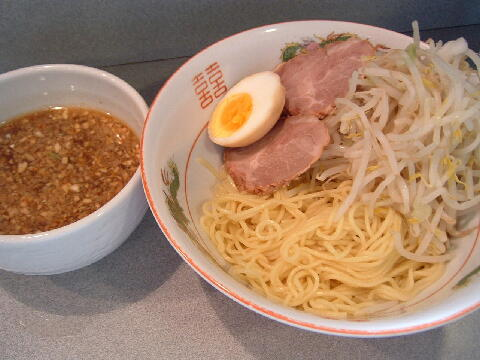

港区 虎ノ門 3-2-3
日・祝
11：00〜19：00
店員は、おじさんとおばさん。おばさんは元気でテキパキ。
白コショウ（ギャバン）。トウガラシ。酢。
レンゲ有。ティッシュ有。名刺無。
BGMは、無。
トッピングは、いつもと同じ。
旧 ラーメン二郎 虎ノ門店
「ラーメン 虎ノ門店」でヤフー検索
「ラーメン 虎ノ門店」でヤフーリアルタイム検索
「ラーメン 虎ノ門店」でグーグル検索
ラーメン ヤサイマシニンニクマシ
麺は、細麺（二郎にしては）。硬めでポリポリした感じがあった。
ぶたは、薄めで小ぶり。脂身が多目。柔らかくトロトロ。
スープは、カラメにしたので辛め。神田、新橋系。
ヤサイは、モヤシ8：キャベツ2の割合。閉店間際だったので元気が無かった。
ニンニクは、細かく刻まれた生ニンニク。
みそラーメン ヤサイニンニク
みそラーメンでした。二郎ではなかったです。
おそらく二郎を知らない近くの会社員の「みそはないの？」という要求に答えたのだろう。

つけ麺醤油 ヤサイダブルニンニクダブル
トッピングはラーメンと同じ。
つけ汁の丼には、トウガラシが掛かった醤油ダレ。程好い酸味がある。
ニンニクはこちら。
麺の丼には、麺、ぶたに煮玉子。
つけ麺味噌 ヤサイダブルニンニクダブル
味噌つけ麺はつけ汁がトウガラシの辛味がある味噌味になる。
あとは醤油つけ麺と同じ。
ＰＣ店